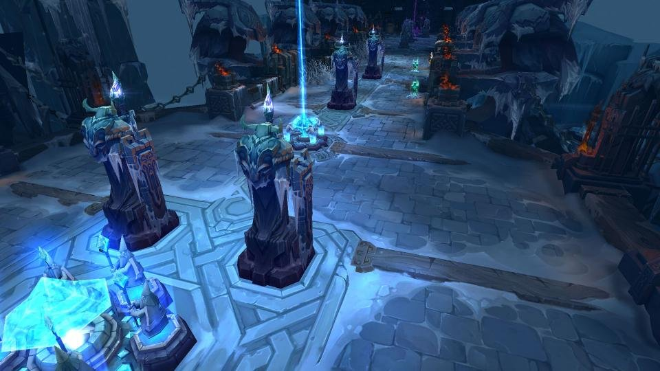

Welcome To My life
안녕하세요 웹프로그래밍 수업을 듣고계신 여러분!
저는 이번에 성신여자대학교에 입학한 20학번 융합보안공학과 유은선이라고 합니다. 어쩌다가 접한 프로그래밍이 재미있었고 보안에 관심이 있어서 성신여자대학교 융합보안학과를 알게 되었습니다.
학교에 가지 않아서 심심할때에는 주로 제가 좋아하는 게임을 하거나 유튜브를 자주봅니다. 요즘에는 집에서 운동을 해보려고 노력중입니다.
얼른 상황이 좋아져서 학교에도 가고 여러 군데 놀러도 가고싶습니다.
My Hobby

제 취미는 게임하기 입니다. 주로 'League of Legend' 롤이라는 게임을 하지만 다른 다양한 게임도 즐겨합니다. 여러 친구들과 같이 게임하는 것 또한 좋아합니다.
롤을 하면 주로 원딜이나 서포터를 주로 하고 칼바람을 많이 플레이합니다. 그리고 게임 방송이나 제가 좋아하는 게임 팀 선수들의 영상을 자주 봅니다.
전에는 e-sports를 직관하러 서울에 자주왔었는데 지금은 상황이 좋지않아서 무관중이나 온라인으로 진행해서 너무 아쉽습니다.
위에서 어쩌다가 프로그래밍을 접하게 됐다고 했는데, 게임을 하기 위해 이것 저것 찾아보다가 프로그래밍을 간접적으로 접할 수 있었습니다.